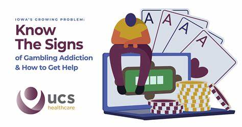

Access support resources, educational content, and counseling services.
Maintain a balance by limiting gambling time, setting budgets, and taking breaks regularly.
Excessive gambling can lead to financial stress, relationship issues, and mental health problems. It’s important to gamble responsibly and seek help if necessary.
If you or someone you know needs help, consider reaching out to these support organizations:
For personalized counseling support, please reach out to licensed professionals through the following services: